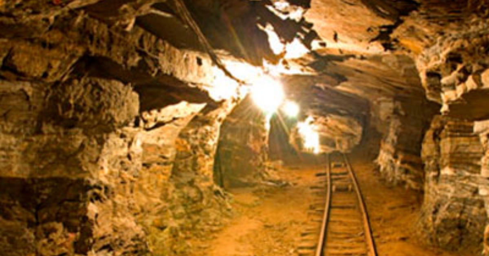

Mina da Passagem
Mariana, Minas Gerais • Brasil
★★★★★
Informações Gerais
📠Rodovia dos Inconfidentes, km 2, Passagem, Mariana - MG, 35420-000, Brasil.
Sobre
A Mina da Passagem, localizada entre Ouro Preto e Mariana, é a maior mina de ouro aberta à visitação do mundo. Com mais de 300 anos de história, ela permite que os visitantes desçam cerca de 120 metros em um antigo carrinho de mineração para explorar túneis subterrâneos impressionantes. O passeio revela a história da mineração no Brasil e proporciona uma experiência única ao conhecer de perto galerias e lagos subterrâneos. É um destino imperdÃvel para quem deseja vivenciar a história do ciclo do ouro de maneira autêntica e emocionante.